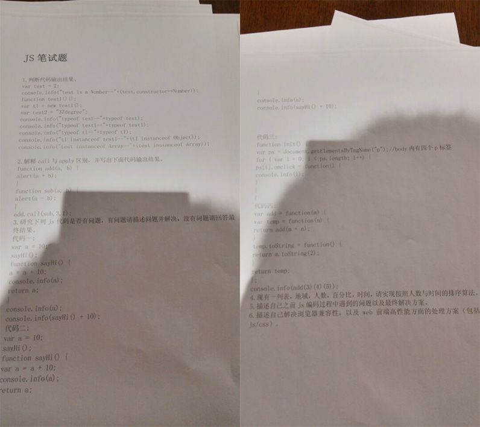

WEB前端面试题解答帖，面试前后必看！！！
2017年02月22日
有人说：面试是一种学习。
但问题是：面试过后，又该如何学习？
从今天起，妙味课堂 来帮你！！！
当你面试后，遇到任何不明白的面试题，请提交到这里。
我们会帮你分析这些困扰你的 “WEB前端” 面试题，助你在下次面试时，更加从容、更显自信、更快找到好工作！
好啦，不废话，直接上图：

这是两天前，一位前端求职者去面试时遇到的面试题，他趁机偷拍了两张发到 QQ 群了。当然了，他期待有高手给他些指点，让他顺利通过笔试。但时间又紧、事发突然，怎么可能会迅速给他答案呢？就算是给了答案，若自己不理解的话，被面试官稍稍扩展追问，也必定当场露馅，岂不尴尬？
所以，当你面试受挫后，要化郁闷为力量，因为此时正是最佳学习时机！！
现在，我们就把上面看不太清楚的面试题给大家整理出来，并给出参考答案，方便大家学习讨论：
1、判断代码输出结果
var test = 2;
console.log("test is a Number--" + (test.constructor == Number));
function test1() {};
var t1 = new test1();
var test2 = "37degree";
console.info("typeof test--" + typeof test);
console.info("typeof test1--" + typeof test1);
console.info("typeof t1--" + typeof t1);
console.info("t1 instanceof test1--" + (t1 instanceof Object));
console.info("test instanceof Array--" + (test instanceof Array));
参考答案：
test is a Number -- true
typeof test -- number
typeof test1 -- function
typeof t1 -- object
t1 instanceof test1 -- true
test instanceof Array -- false
分析：
首先涉及到 JS 预解析的概念，这里的 变量申明 和 函数申明 都会被预解析处理，知道这个以后，那么下面一个一个来分析：
第一个：
因为 test = 2 先执行了，所以这里 test 的值已经是一个数字了，那么 test.constructr 就是 Number，所以下面这个打印 true；
console.log("test is a Number--" + (test.constructr == Number))
第二个：
原因同上，需要注意 typeof 得到的结果 number 的 n 是小写的！
第三个：
test1 是一个函数，typeof 值为 function；
第四个：
通过 new 得到的结果一定是一个 Object，所以 t1 的 typeof 结果为 object；
第五个：
这个题有点误导人的，首先出题人写的是 instanceof test1，但真正计算的却是 instanceof Object，请注意它们的差异！不过不影响结果的，结果都是 true；
第六个：
test 是一个数字，所以他的构造函数应是 Number，而不是 Array，所以结果为 false；
有不明白 或 有异议的地方吗？请直接留言哦~
2、解释 call 与 apply 的区别，并写出下面代码输出的结果：
function add(a, b) {
alert(a + b);
}
function sub(a, b) {
alert(a - b);
}
add.call(sub, 3, 1);
参考答案：
结果为：4
分析：
call 和 apply 都是函数下的一个静态方法，可以通过函数 .call() 或 函数 .apply() 的方式来间接调用该函数，通过 call 或 apply 执行时候的第一个参数改变该函数执行过程中的上下文对象（this），如果第一个参数不存在或者设置成 null/undefined，那么该函数执行过程中的上下文对象指向全局上下文对象，在 JavaScript 中指向了 window 对象。
不同之处在于后续参数上，call 第一个参数以后的参数值将被一一对应的赋值给源函数的形参，而 apply 则是传入一个数组，间接传给函数的 arguments 对象。
有不明白 或 有异议的地方吗？请直接留言哦~
3、研究下面 JS 代码是否有问题，有问题请描述问题并解决，没有问题请回答最终结果。
代码一：
var a = 10;
sayHi();
function sayHi() {
a = a + 10;
console.log(a);
return a;
}
console.info(a);
console.info(sayHi() + 10);
参考答案：
20
20
30
40
代码一分析：
//申明全局 a，值为 10
var a = 10;
sayHi(); //调用
function sayHi() {
a = a + 10; //这里的 a 是全局的 a，而不是局部的，所以执行的结果是把全局 a 设置成了 20
console.log(a); //20
return a; //返回 20
}
console.info(a); //全局 a 已经是 20 了
console.info(sayHi() + 10); //首先又一次执行了 sayHi()，结果把 a 改成了 30，然后打印了一次 30，执行完以后返回了 30，然后在加 10，打印结果 40
有不明白 或 有异议的地方吗？请直接留言哦~
代码二：
var a = 10;
sayHi();
function sayHi() {
var a = a + 10;
console.info(a);
return a;
}
console.info(a);
console.info(sayHi() + 10);
参考答案：
NaN
10
NaN
NaN
代码二分析：
//申明全局 a，值为 10
var a = 10;
//调用
sayHi();
function sayHi() {
//注意这里有一个 var，那么这里的 a 就是局部变量了，另外还是需要预解析一下，其实可以这么去看代码：
/*
var a; //申明未赋值，默认值是 undefined
a = a + 10; // a = undefined + 10 结果是 NaN
*/
var a = a + 10;
console.info(a); // NaN
return a; //返回 NaN
}
console.info(a); //这个还是全局的 a，所以结果 10
console.info(sayHi() + 10); //依据上面的分析，这里的 sayHi 会打印一次 NaN，然后加 10，结果还是 NaN
有不明白 或 有异议的地方吗？请直接留言哦~
代码三：
function init() {
var ps = document.getElementsByTagName("p"); //body内有四个p标签
for (var i=0; i<ps.length; i++) {
ps[i].onclick = function() {
console.info(i);
}
}
}
参考答案：
当 p 标签被点击的时候，结果都是打印 4
分析：
// 1. console.info(i); 的执行是需要用户点击后执行的，当用户点击的时候，for 循环的执行已经结束，那么 i 的值已经被设置成了 4，也就说当用户去点击的时候 i 的值已经是 4 了；
// 2. 当 console.info(i); 执行的时候，会根据作用域链去查找 i，这样会找到 for 中定义的全局 i，这个时候不管点击那个 p 标签其实打印的都是全局 i 变量，所以结果都是统一的 4；
// 解决方案一：
function init() {
var ps = document.getElementsByTagName("p");
for (var i=0; i<ps.length; i++) {
(function(n) {
ps[n].onclick = function() {
console.info(n);
}
})(i);
}
}
// 解决方案二：
function init() {
var ps = document.getElementsByTagName("p");
for (let i=0; i<ps.length; i++) {
ps[i].onclick = function() {
console.info(i);
}
}
}
有不明白 或 有异议的地方吗？请直接留言哦~
代码四：
var add = function(m) {
var temp = function(n) {
return add(m + n);
}
temp.toString = function() {
return m.toString(2)
}
return temp;
}
console.info(add(3)(4)(5));
参考答案：
// 二进制
1100
分析：
首先执行 add(3)，这个时候需要注意的是根据参数创建了一个局部的 m 变量值为 3，但是返回值是一个 temp 的函数，也就是说 add(3) 的结果是 temp 函数，继续后面执行：temp(4)，这个函数接收一个 n 参数，现在的值是 4，然后调用 add(m + n)，受到闭包影响，这里的 m 其实就是第一次的 add 的 m，也就是 3，所以这里其实就 add(3 + 4)，也就是 add(7)，执行后返回的这次 add 中创建的 temp，那么后面就是 temp(5)了，根据上面的推导，执行后的结果其实 add(7 + 5)，也就是最后一次调用 add 的时候传入的是 12，也就是 add(12)，这个再次返回 temp，当 console.info 的时候，会默认调用 toString 方法进行字符串格式化，因为 temp 的 toString 被重写了，那么打印的其实 m.toString(2)，也就是 (12).toString(2)，打印 12 的二进制值，也就是 1100 了。
有不明白 或 有异议的地方吗？请直接留言哦~
4、请实现以下功能：
需求：
设计一个列表，包含：地域、人数、百分比、时间。请实现按照 人数 与 时间 的排序算法。
参考答案：
var data = [
{
area: '深圳',
percentage: 15,
number: 80,
staytime: 2
},
{
area: '北京',
percentage: 30,
number: 150,
staytime: 4
},
{
area: '广州',
percentage: 25,
number: 60,
staytime: 3
},
{
area: '上海',
percentage: 30,
number: 100,
staytime: 4
}
];
/*
* 根据指定的字段和规则排序数据
* data Array 要排序的数据
* field string 排序依据的字段
* rule string 排序规则 DESC / ASC
* throw
* data is invalid : 要排序的数据不存在或类型不正确
* field is invalid : 排序参考字段不存在
* return Array 排序后的数据
*/
function mySort(data, field, rule) {
if (!(data instanceof Array)) {
throw new TypeError('data is invalid');
}
if ( !(field in data[0]) ) {
throw new RangeError('field is invalid');
}
if ( !rule || ['DESC','ASC'].indexOf( (rule = rule.toString().toUpperCase()) ) == -1 ) {
rule = 'DESC';
}
data.sort(function(a, b) {
var v = a[field] - b[field];
return rule == 'ASC' ? v : -v;
});
}
mySort(data, 'number', 'desc');
console.dir( data );
有不明白 或 有异议的地方吗？请直接留言哦~
5、描述自己之前 JS 编码过程中遇到的问题以及最终的解决方案。
分析：
纵然有些面试题可以通过提前准备，从而做到有备无患，但还有些面试题，就非常容易暴露出真实技术水平了，比如像这道题，就非常容易被 “套出” 真实信息。
这道题的考点是 “你自己” 在编码过程中遇到的 “问题”，意思就是你所表达的难题，应该代表着你目前研究水平的深浅程度。
对此不变应万变的真理是：做个复杂些的项目吧，只有在各种复杂的项目中，你才会发现自己真正遇到的问题是什么、以及最终如何解决的。然后再把真实的解决过程、方法描述出来，作为这道题的答案。剩下的，就交给考官去判断吧。
好消息是：
虽然当前 WEB前端 面试者众多，但真正的独立完成一件有水准的作品的面试者，真心不多！因此，只要你敢于在面试前下苦功，做出一、两件真正的好作品出来，你就非常容易鹤立鸡群、傲视群英了，加油！！！
6、请列举一些浏览器兼容性问题？以及提高性能方面的方案（JS/CSS）。
参考答案：
-- JS 兼容性问题 --
1. JSON 解析问题：
ecmascript5 通过 JSON 对象进行处理，ecmascript5 之前通过 eval 进行解析；
2. 自定义属性问题：
IE 下，可以使用获取常规属性的方法来获取自定义属性，也可以使用 getAttribute() 获取自定义属性；
Firefox下，只能使用 getAttribute( )获取自定义属性。
解决方法：
统一通过 getAttribute() 获取自定义属性，不过更推荐直接通过 “点” 运算符访问元素属性。
3. 事件对象兼容性问题：
非标准 IE 和 chrome 下可以通过全局 event 对象来获取，标准（包括标准 IE，chrome 等）浏览器通过事件函数的第一个参数传入。
4. 事件源对象
IE 下使用 event.srcElement，标准下使用 event.target 来获取。
5. 阻止事件冒泡
通常可以通过 event.cancelBubble = false 来阻止，但是标准推荐使用 event.stopPropagation() 方法来阻止；
6. 事件默认行为的阻止
DOM1 事件绑定中(属性 on... 的方式)可以通过 return false 来阻止，但是在 DOM2 的事件绑定中(addEventListener)中，只能通过 event.preventDefault() 方法来阻止。
其实还有很多……懒得写了~~ ㄟ(▔,▔)ㄏ
-- JS 优化问题 --
1. 最小化 DOM 访问次数，尽可能在 JS 端执行；
2. 如果需要多次访问某个 DOM 节点，请使用局部变量存储对它的引用；
3. 小心处理 HTML 集合，因为它实时连系着底层的文档，把集合的长度缓存到一个变量中，并在迭代中使用它，如果需要经常操作集合，建议把它拷贝到一个数组中；
4. 如果可能的话，使用速度更快的 API，比如 querySelectorAll 和 firstElementChild；
5. 要留意重绘和重排，批量修改样式时，“离线”操作 DOM 树。使用缓存，并减少访问布局的次数；
6. 使用事件委托来减少事件处理器的数量；
7. 避免多次访问对象成员或函数中的全局变量，尽量将它们赋值给局部变量以缓存；
8. 能用 CSS 解决的问题，尽量不用 JS 去解决；
其实还有很多……懒得写了~~ ㄟ(▔,▔)ㄏ
-- CSS性能优化问题 --
1. 加载方面
1）慎用 @import：import 会使我们的 link 样式由原本的并发加载，变成异步加载；
2）压缩代码体积：
a. 压缩代码，删除换行，多余的空格和注释；
b. 合并重复代码，提高代码的通用性；
c. 精简包含选择符，在使用包含选择的时候，尽量精简层级；
d. 能使用复合样式时，尽量使用复合样式；
e. 多利用继承，来精简样式；
2. 优化请求
1）使用 css 精灵，减少图片个数和体积；
2）合理合并文件，精简外部文件个数；
3）对于不需要重复使用的图片，可适当使用 data Uri；
4）在设计统一的情况下，可使用 FontIcon 的方法，来统一整合页面上的图片；
3. 渲染方面
1）涉及动画方面，尽量可以使用位移来解决，努力减少回流；
2）涉及动画方面，可以利用 3D，来进行 GPU 加速；
3）避免使用 table，为了减少回流；
4）避免 text-shadow 和 box-shadow 层级过多；
5）减少浮动和绝对定位的滥用；
6）不滥用 WEB 字体，在部分浏览器下会造成渲染阻塞；
其实还有很多……懒得写了~~ ㄟ(▔,▔)ㄏ
-- CSS兼容性问题 --
1. 不加文档声明IE下会陷入怪异合模型解析；
2. IE6 下高度小于 19px 的元素，高度会被当作 19px 处理（可利用 overflow 解决）；
3. chrome 下字体大小小于 12px 时会被当作 12px 来处理 （目前只能截图处理）；
4. 在 IE8 以前的 IE 中不识别 HTML5 新增的标签； （可利用 document.createElement 来创建该标签）；
5. 在 IE6 下，块元素有浮动 ，左右的 margin 值会被放大成两倍（display:inline）；
6. 在 IE6,7 下 li 本身没有浮动，但是内容浮动了，li 下边就会多出间隙( li 加浮动或 vertical-align:top )；
其实还有很多……懒得写了~~ ㄟ(▔,▔)ㄏ
不过面试时人家随口一问（或随纸一问），你能答出这些来，已经对得住面试官了，他还想你怎样呢？
满意.满足？
<(￣︶￣)>
有不明白 或 有异议的地方吗？请直接留言哦~
相关链接： >> 2017年第一波JavaScript前端面试题
问：如何提交面试题？
答：就在这个帖子下留言喽，我们会把面试题收集起来，并给出参考答案，供大家交流学习。
问：如何查看我们已经回复过的面试题？
答：关注妙味课堂微信公众号：
输入：面试题 即可查看~
- 课程咨询QQ：2852509866、2852509867、2852509868
- 课程咨询电话：010-57269690
- 客服在线时间：周一至周五 9:30-18:00 周六至周日 10:00-17:00
 加载中...
加载中...
加载完毕